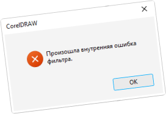

почему мы не используем coreldraw
В мире дизайна мы сделали выбор в пользу Adobe, оставив за бортом формат CorelDraw.
Давайте
разберем, почему именно Adobe стал нашим надежным союзником в творчестве.
-
1
Adobe - это компания, представляющая широкий спектр продуктов, среди которых вы, вероятно, знакомы с основными:


а также более 90 других продуктов
-
2
Поддержка CorelDraw практически отсутствует в Европе и США, поскольку более 98% типографий в этих регионах не используют данный формат.
-
3
Главный недостаток CorelDraw заключается в преобразовании документа во внутренний формат bitmap. Это особенно заметно при обработке растровых изображений, где могут возникнуть различные артефакты, такие как неожиданные грани, изменение цветов или полная инверсия изображения.

-
4
Современная лицензия CorelDraw может оцениваться в 600 долларов в год на одного пользователя, что может быть финансово недоступным для многих типографий. Из-за этого они вынуждены использовать устаревшие версии программы, что может привести к искаженному отображению контента.
-
5
Обучение наших дизайнеров работе в CorelDraw требовало бы значительного времени. Учитывая, что это формат с тенденцией к упадку, вкладывание человеческого капитала в него становится неоправданно.
Более тысячи специалистов по всему миру активно участвуют в разработке и обеспечивают высокое качество продуктов и их разнообразные возможности.
В то время как CorelDraw ограничивается только CorelDraw.
В отличие от этого, Illustrator лишен подобных неожиданностей и обладает полной совместимостью с форматами PDF и EPS, необходимыми для полиграфии. Важно отметить, что, несмотря на возможность сохранения файлов в формате PDF, CorelDraw плохо распознает PDF файлы, что может привести к потере некоторых элементов макета. Поэтому при подготовке макета для офсетной полиграфии Illustrator остается оптимальным выбором.


Используя среду Adobe, мы вкладываемся в инновации, качество и признание в мировом масштабе. Присоединяйтесь к нам в этом увлекательном путешествии в мир творчества, где каждый проект становится настоящим произведением искусства.